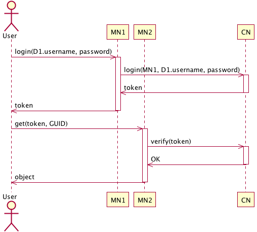
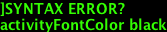
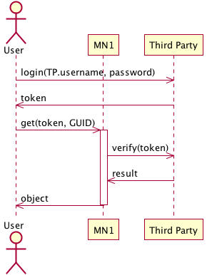

Authentication in DataONE
| Author: | Dave Vieglais |
|---|
| Status: | Draft for comment |
|---|
| Date: | 20091023 |
|---|
This document outlines some simplistic approaches for authentication of users
of the DataONE system. It is not intended to be comprehensive but rather to
offer a common starting point for discussion about the topic in the context of
the DataONE infrastructure.
Overview
Users and services authenticate in DataONE for the following purposes:
- To confirm their identity
Identity is utilized in the DataONE infrastructure to:
- To indicate ownership of objects
- To confirm or deny access to an object (read / write) through some access control rules
Four scenarios of identify provider are investigated below:
- Users are authenticated by Coordinating Nodes;
- Users are authenticated by Member Nodes (a user identity managed by “their”
MN);
- Users are authenticated by a third party identity provider; and
- Users are authenticated by any scheme with algorithmic verification
available at any node.
The basic assumption in all cases is that the user authenticates using some
credentials and a key (password or some other secret) and the identity
provider returns a token that the user can pass around as proof that they have
authenticated with the DataONE system at some time within the last XXX period
of time.
Scenario 1: Authentication provided by CNs

- The Member Nodes must trust Coordinating Nodes as an identity provider
- The CNs must trust that MNs are forwarding credentials appropriately
- All accounts exist on and are managed by CNs
Scenario 2. Authentication provided by MN

- token must have signature that indicates the issuing MN
- MN2 trusts MN1 as an authentication provider
Scenario 3. Authentication through Third Party Identity Provider

- MNs and CNs must trust the third party identity provider
- Assuming access control rules are present on MN1
Scenario 4. Authentication Verified Algorithmically by Any Node
- Minimizes communication between Nodes for identity verification
- All MNs and CNs must trust each other (to accept identity)
- Assuming access control rules are present on MN1